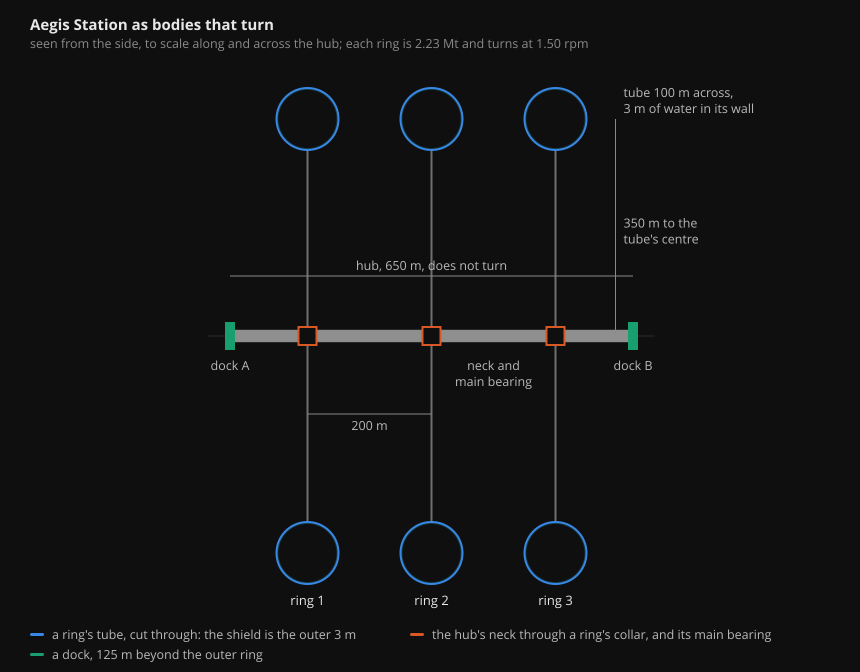
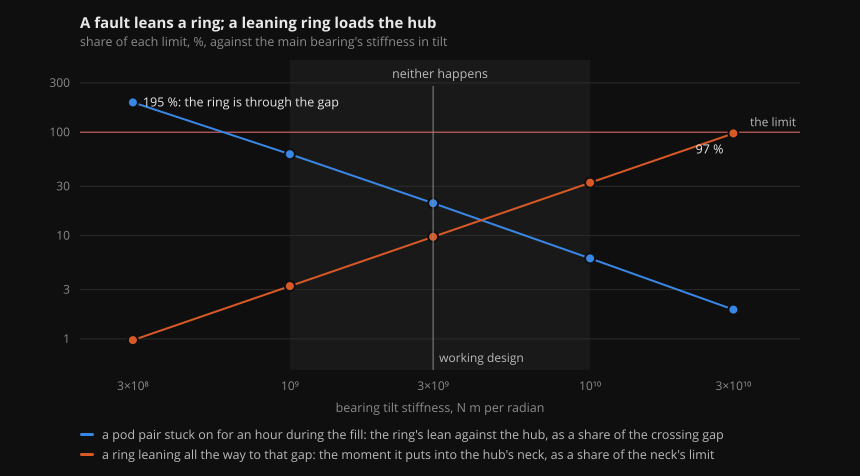
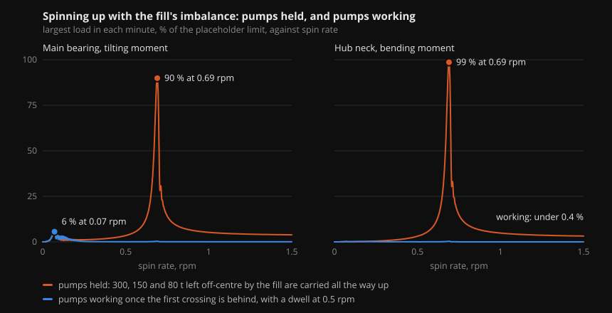
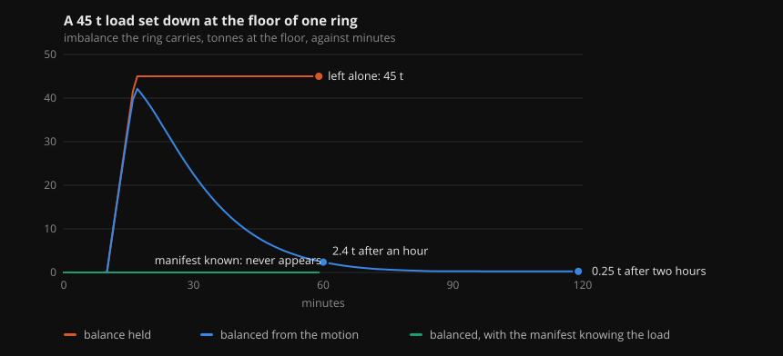
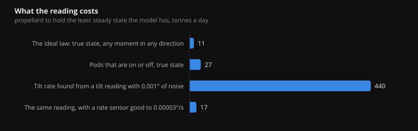

Aegis Station is three rings, each 2.23 million tonnes, turning at 1.50 rpm on a hub 650 m long that does not turn. This page is the station read as bodies that turn, through its three phases: the fill, with every ring at rest; the spin-up, all three together; and normal operation. It says what keeps a ring balanced, what is crossed on the way up to speed, what holds a ring's axis where it should be, and what would have to go wrong for a ring to reach its neighbour or for the hub to break.
Behind it is a dynamics model, a simulator that steps the model live, an operator console, and recorded runs. The figures are drawn from the model's results and the clips are those recordings. No part of this is built. Every limit on the page is a placeholder and is called one.

A ring is a wheel and a gyroscope at once. As a wheel it has a rate and a balance. As a gyroscope it has an axis that it keeps unless something pushes on it, and it answers a push at right angles. Three of them sit on one hub, and the hub is light enough that the rings carry it about, not the other way round.
| Quantity | Value |
|---|---|
| Ring mass | 2.23 Mt: 2.01 Mt of shield water, 0.22 Mt of structure |
| Spin rate | 1.50 rpm, one turn in 40 s, 1 g at the 397 m floor, 63 m/s at the rim |
| Angular momentum | 4.5 × 1013 N m s per ring |
| Propellant to spin one ring up | about 25,000 t, 1.1 % of the ring |
| Segments | 40 per ring, each about 50,000 t of water; 1 % of each free to move for trim |
| Pods | 8 per ring at the rim, as 4 pairs, 27 kN each along the axis |
| Hub | 650 m, with a dock at each end; its mass is not yet sized and is taken as 100,000 t |
The model has the hub as a bending beam with five stations, each ring free to tilt at its bearing, the share of a ring's water that does not follow it as a separate body, pods that are on or off, trim pumps with a rate and a range, and an actuator at each bearing. It is linear, good to a few degrees, which is further than anything here is allowed to go.
The rings must not reach each other, and they must not break the hub. Both come down to how stiffly a ring is held in tilt at its main bearing.
Hold a ring stiffly and it cannot lean far, but what lean it takes goes into the hub's neck as bending. At 3 × 1010 N m per radian, the first stiffness the model was given, a ring leaning as far as the crossing gap has the neck at 97 % of its placeholder limit. Hold a ring softly and it keeps its own plane while the hub moves under it, but a fault can lean it a long way before the bearing catches it.

The working design is a bearing soft in tilt, about 3 × 109 N m per radian, with an actuator at each bearing for damping, and a hub soft enough that its bending resonance is crossed early in a spin-up. On it, in the faults run so far (a pod pair stuck on during the fill or in normal operation, a bearing actuator stuck on, a top-off landing in one segment, all control lost), the furthest a ring leans against the hub is 21 % of the crossing gap, the most a neck carries is 17 % of its limit, and the most a bearing carries is 62 % of its own. The case that comes nearest a limit is not a fault but an omission: a spin-up with the balance held, in section 5.
The bearing's limit (5 × 107 N m in tilt) and the neck's (1.5 × 109 N m in bending) are placeholders with no design behind them. What the model gives is how the loads move with the choices, not whether a particular bearing survives.
The rings move together. All three are filled at rest, all three are spun up together, and they turn together from then on. A spin-down is the spin-up run backwards, again all three. At no time does one ring stand still beside another that turns: that is the least steady arrangement the model has, and this rule is what keeps the station out of it.
Three things act on the station's motion. Trim pumps move a little of the shield's water between segments, to put a ring's mass centre back on its axis. Pods at the rim fire along the axis, to turn or hold a ring's plane. An actuator at each main bearing damps a ring's tilt against the hub.
| Phase | The rings | What steadies the station | What the phase asks for |
|---|---|---|---|
| The fill | At rest, each taking on 2.01 Mt of water | Pods hold each ring as an ordinary body | An even fill, because a ring at rest tells nothing about its balance |
| The spin-up | From rest to 1.50 rpm together, over about thirty days | Trim pumps, once the readings tell them something; bearing actuators | Two resonances crossed without building up |
| Normal operation | At 1.50 rpm | Trim pumps for balance, pods for the axis, bearing actuators for damping | A good reading of tilt rate |
Each ring takes on its water at rest. Tankers dock at the two ends of the hub, full cartridges are carried along it to a ring and empties come back. At the fleet's cadence a tanker arrives or leaves every 18 minutes.
The hub hardly notices the traffic. A 53 t tanker meeting a dock with 0.05 m/s left sideways moves the dock a tenth of a millimetre and puts 0.02 % of its limit on a neck; it would have to arrive sideways at about 280 m/s to reach that limit. Docking is not a load in any phase.
A ring's balance is read from what it does to the hub as it turns. A ring at rest pushes on nothing and tells nothing. In three hours of the fill on the simulator, with 2 % of one ring's delivery landing unevenly, 8 t builds off-centre and nothing shows it.
That puts a requirement on the fill. The rings are spun up through their first resonance as the fill left them. Without help from the bearing actuators the off-centre part of a ring's fill has to be under about 900 t, 0.05 % of its water. With them, about 2,300 t. Metering the fill by flow and by level in each segment is a requirement, and it is a tighter one than the pumps or the trim range.
A ring at rest is not a gyroscope. A push leans it the way it is pushed, with only the bearing's stiffness against it, so the fill is when a stuck pod matters most. One pod pair stuck on for an hour with nothing answering it leans its ring 0.59° against the hub on the working design, 21 % of the crossing gap, and puts 62 % of its placeholder limit on the bearing. This is the fault that sets the soft edge of the window in section 2.
All three rings come up together, from rest to 1.50 rpm over about thirty days. An imbalance pushes once a turn, so on the way up the rings pass any natural motion of the station that goes round at that rate. On the working design there are two. Under 0.1 rpm the hub rocks against the rings on the bearings' tilt stiffness. Near 0.68 rpm the hub bends between the rings.
A resonance needs time to build, about as long as its motion takes to die out. The first is narrow and a thirty-day spin-up is through it in minutes, so it never reaches its height; a dwell on it would. The second is broad, and is met in full at any pace thrusters can give.

At the real thirty-day pace, with the balance on throughout, the largest bearing load of the whole month is 7.6 % of the limit, at 0.056 rpm on the second day. That is the first crossing itself, and it comes before the readings can tell anything. The 300 t is down to 65 t by day three and under a tonne by day ten. The bending crossing passes at 0.13 % of the neck's limit.
Hold the pumps through the first crossing. Just past it the readings begin to tell something, but what they tell there is wrong, and acting on it made that crossing worse: 7.2 % of the bearing limit against 5.6 % with the pumps held until 0.10 rpm.
All three rings at 1.50 rpm, and people living in them. The balance is kept by pumped water, the axes are held by the pods, and the station's ordinary traffic goes on.
A lived-in ring is never quite even. A load off-centre moves the ring's mass centre off the bearing axis, and because the hub is the light body, the hub is what gets carried round, once a turn. The shield is water in 40 segments, so the correction is to pump a little of it from one side to the other.
The water is not teleported. Pumps have a rate, segments have a range, and water moving round a turning ring pushes on it while it moves, because it is turning faster or slower than the ring it is in. A correction made evenly over a time T adds 2 / (spin rate × T) of the load it is removing:
| Correction made over | Extra load from the water in motion |
|---|---|
| 13 seconds | as much again |
| 2 minutes | a tenth |
| 20 minutes | one part in a hundred |
So the pumps are not the limit. At 100 kg/s each they could cancel a 45 t load in 25 seconds, and doing so would load the hub half as much again as the load itself. Going slowly is the choice. The imbalance is estimated from the motion (accelerometers on the hub at the three ring stations, load cells at the three bearings, each reading turned back by the ring's angle and averaged) and the trim is moved against the estimate over about an hour. At full rate the readings tell about 0.1 t at the floor.

A ring's axis is held by pods at its rim firing along the axis. The pods are fixed to the ring and are either on or off, so a pair can only push the way that is wanted as it passes that way, every five seconds for one pair or another. Timing matters more than thrust:
| How a pair is fired | Propellant, against a thruster that could push any way at any moment |
|---|---|
| In a pulse centred on the moment it passes the wanted direction | 1 % more |
| From the moment it enters a 60° window | 26 % more |
| Whenever it can help at all | 46 % more |
The law has two terms: one that points the axis, pushing at right angles to the error as a gyroscope requires, and one that opposes the tilt rate. Without the second the first feeds the ring's own 20-second wobble. And the second is where the cost is, because it needs to know the tilt rate.

One more finding. A reading that arrives four to six seconds late is a quarter-turn late for the 20-second wobble and feeds it; bearing actuators or a rate sensor remove that band.
Six hours of ordinary occurrences on the simulator: a shuttle docks, two water cartridges cross to a ring and are emptied, a shift change gathers three hundred people on one side of a ring and disperses them, a transit car makes three and a half circuits, cargo comes down a spoke, a tanker docks, stores are stowed to one side, the shuttle leaves.
With a ring trimmed to what the readings can tell, the hub moves 0.14 mm once a turn, 0.3 micro-g sideways, which is what a laboratory fixed to the hub would feel.
A turning ring is hard to move, and the faults that lean a ring at rest do much less to it.
A few early figures changed as the model was extended. They are listed because anyone checking this work would want to know.
| What | Was | Is | Why |
|---|---|---|---|
| Propellant to turn or hold a ring's axis | 21 t to bring a ring in from 0.1° | 43 t | A moment across the rim takes a pod on each side. Only one of the two had been counted, so every such figure doubled. Spin-up propellant was unaffected. |
| Resonances crossed in a spin-up | One | Two | The first sweep stepped over two narrow peaks. They are now found by search, and each is cut to what the spin-up has time to build, checked against runs in time. |
| Bearing actuator gain | 1012 N m s/rad | 2 × 1010 on a soft bearing | The first gain was chosen beside a stiffer bearing. On a soft one it made the bearing act stiff once a turn. A recording from the simulator showed the actuator carrying fifty times the bearing's own moment. |
| When the balance acts | Whenever it had an estimate | Only when the estimate is worth having | At low spin rates the readings cannot tell an imbalance the trim could cancel, and just past the first resonance the estimate is wrong. Acting on either made things worse. |
What exists. A dynamics model in plain code with 125 checks against results known without it; a simulator that steps the model live and takes commands; an operator console that watches and steers the simulator; sixteen recorded runs, among them a normal day, the fill's traffic, a fault during the fill, and spin-ups at a three-day pace and at the real thirty-day pace.
What is a model. Everything. No requirements review and no flight software exist for this domain yet; the console steers the simulator directly. The stiffnesses, dampings, limits, noise levels and pump sizes are placeholders chosen to be plausible, and the results are conditions (if the bearing is this stiff, then this), not verdicts.
If something here is wrong. The model, the simulator and the recordings are proprietary to Aegis Station and are not slated for public release; they are shared for evaluation with qualified organizations under agreement. A correction is welcome from anyone: contact@aegisstation.com.